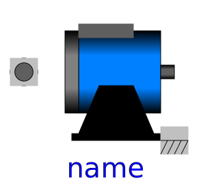
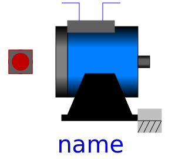
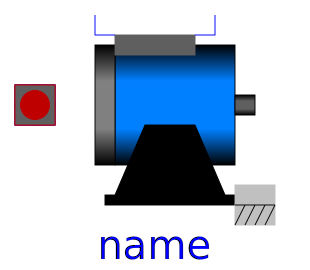
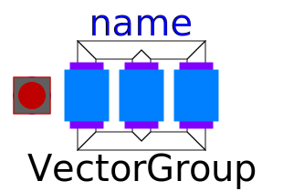
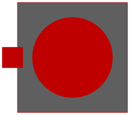
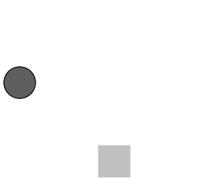

| Name | Description |
|---|---|
| SpacePhasor | Connector for Space Phasors |
|  PartialBasicMachine | Partial model for all machines |
|  PartialBasicInductionMachine | Partial model for induction machine |
| Interfaces and partial models for induction machines | |
|  PartialBasicDCMachine | Partial model for DC machine |
| Thermal ports of DC machines | |
|  PartialBasicTransformer | Partial model of three-phase transformer |
|  ThermalPortTransformer | Thermal port of transformers |
|
|
Power balance of transformers |
|  FlangeSupport | Shaft and support |